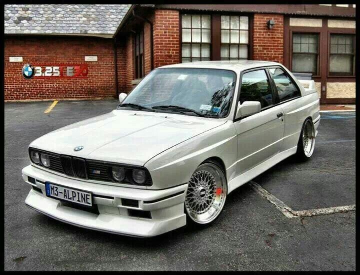

BMW E30
The BMW E30 is the second generation of BMW 3 Series, which was produced from 1982 to 1994 and replaced the E21 3 Series. The model range included 2-door coupe and convertible body styles, as well as being the first 3 Series to be produced in 4-door sedan and wagon/estate body styles.
Manufacturer: BMW- Production: 1982-1994
- Assembly: West Germany & South Africa
- Designer: Clause Luthe, Boyke Boyer
- Colors Available: Grey, Black, White
- Price: R 135,000 (Payment over 24 months available)